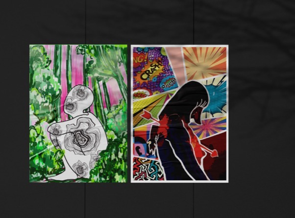

Inner Realms
A series of illustrations that explore the complexities of the inner world. Each piece is like a snapshot of a personal journey, blending surreal elements with raw emotion. The artwork captures moments of introspection, showing how we process feelings, thoughts, and experiences. Through the use of colors, shapes, and intricate details, it invites viewers to reflect on their own inner landscapes, offering a glimpse into the quiet, often unnoticed, parts of ourselves that shape who we are.
